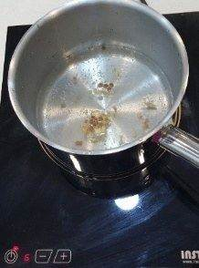
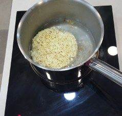
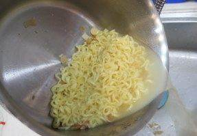
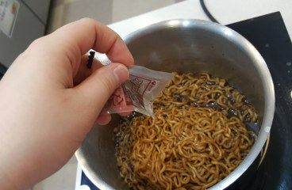
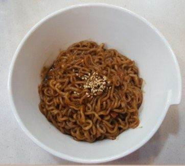

| 메뉴명 | 짜파게티 |
|---|---|
| 판매가격 | 4,500원 |
| 원재료 | 짜파게티 |
| 사용 부자재 | 라면용기 |
| 메뉴특징 | 가장 기본적인 짜파게티 |
조리방법

1
냄비에 물 500g, 건더기 스프를 넣고 인덕션 8번으로 끓인다.
냄비에 물 500g, 건더기 스프를 넣고 인덕션 8번으로 끓인다.

2
물이 끓으면 건더기 스프와 면을 넣고 타이머 3분을 맞춰 끓여준다.
물이 끓으면 건더기 스프와 면을 넣고 타이머 3분을 맞춰 끓여준다.

3
조리가 완료되면 분말스프, 조미유를 넣어서 잘 섞어주고 그릇에 옮겨 담은 후 단무지 30g과 함께 제공한다.
조리가 완료되면 분말스프, 조미유를 넣어서 잘 섞어주고 그릇에 옮겨 담은 후 단무지 30g과 함께 제공한다.

4
면이 익으면 물을 반컵 정도 남기고 버린 뒤, 분말스프를 넣고 30초간 끓인다.(인덕셔 8번)
면이 익으면 물을 반컵 정도 남기고 버린 뒤, 분말스프를 넣고 30초간 끓인다.(인덕셔 8번)

5
소스양이 2큰술 정도 남으면 올리브 조미유를 넣어 잘 섞어준다.
소스양이 2큰술 정도 남으면 올리브 조미유를 넣어 잘 섞어준다.

6
그릇에 옮겨 담고 단무지와 함께 제공한다.
(※토핑: 계란프라이 추가 가능)
그릇에 옮겨 담고 단무지와 함께 제공한다.
(※토핑: 계란프라이 추가 가능)
*본 매뉴얼은 벌툰에 저작권이 있습니다. 유출 및 복제를 금합니다.
※ 기존 라면조리기:
[볶음라면]모드로 조리하기
※ 제조 후 최대한 빨리 제공할 것.